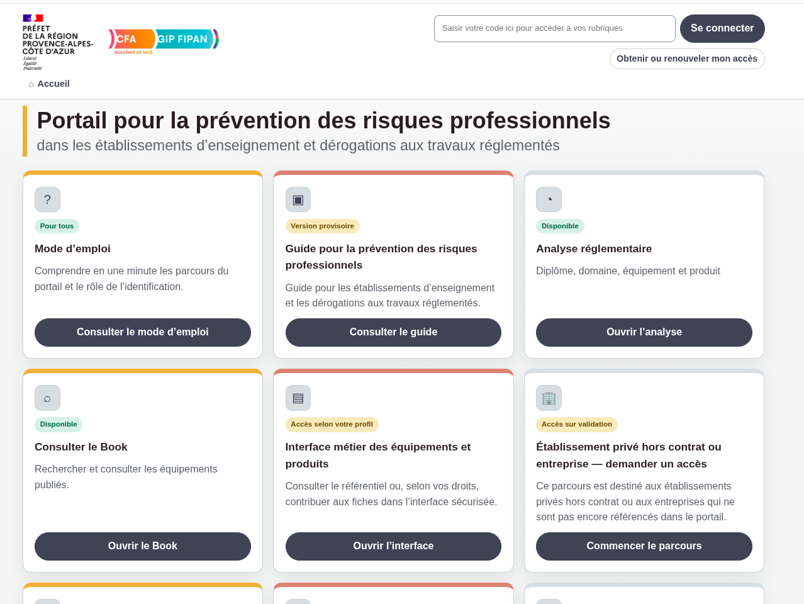
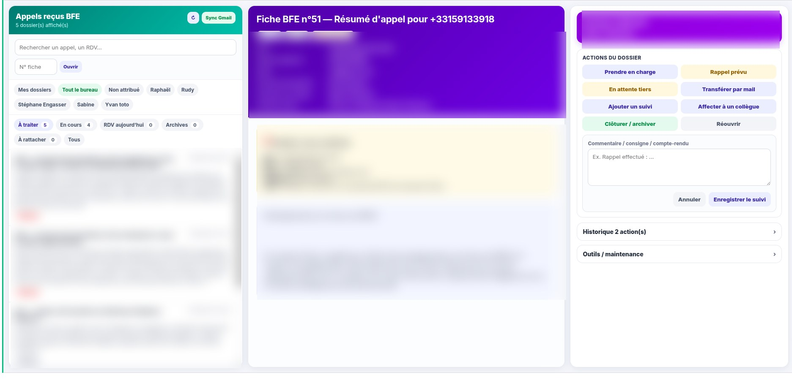
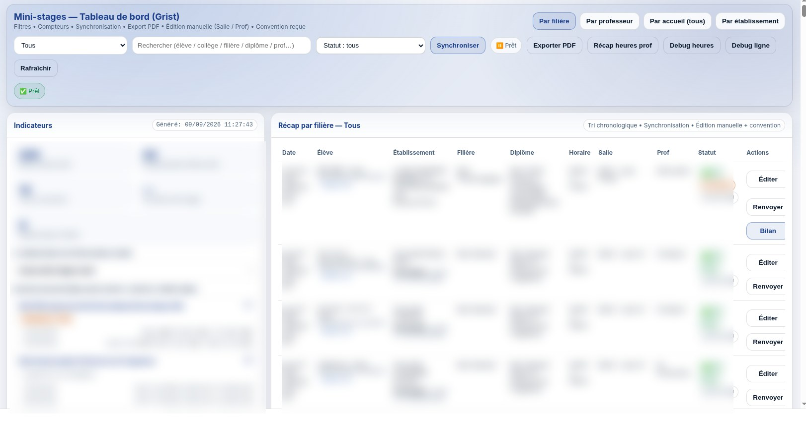

Guide pour la prévention des risques
Portail et outils destinés à accompagner les établissements dans la prévention des risques professionnels et les démarches liées aux travaux réglementés.
Quelques réalisations développées à partir de besoins concrets rencontrés dans la formation professionnelle, l’organisation des parcours et la prévention des risques.

Portail et outils destinés à accompagner les établissements dans la prévention des risques professionnels et les démarches liées aux travaux réglementés.

Centralisation, attribution et suivi des demandes reçues, avec historique des actions et organisation du traitement par l’équipe.

Organisation des inscriptions, conventions, capacités d’accueil, affectations et suivi des mini-stages entre collèges et lycée.